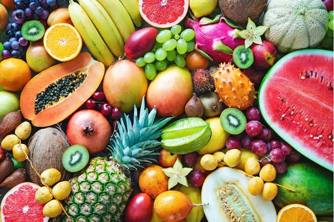

Fruits are the sweet, fleshy, and edible structures produced by flowering plants that encapsulate and protect seeds. Botanically speaking, they develop directly from the mature ovary of a flower following successful pollination. Commonly consumed raw as delicious snacks or desserts, they appear in an astonishing array of shapes, sizes, vibrant colours, and distinct flavours. Beyond their appealing taste, fruits are an indispensable foundation of a balanced diet; they provide a natural energy boost while being packed with vital nutrients like dietary fiber, potassium, antioxidants, and essential vitamins—especially Vitamin C—which actively support digestional health and strengthen human immunity.